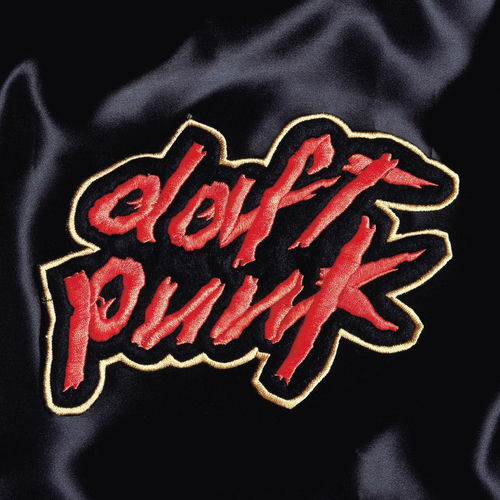

1997
Homework
French house
Quatre chefs-d'œuvre qui ont redéfini la musique moderne. De l'underground parisien au sommet du monde en quatre actes.
1997 — 2013
French house

Electro-disco

Electro-rock

Disco • Funk